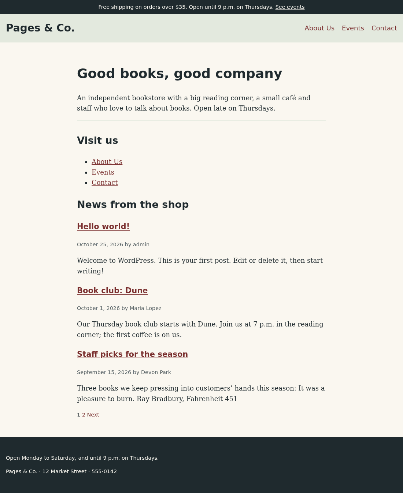

🧰 Lesson 4.3: functions.php: Supports, Assets, Menus & Widgets
pagesco-classic can already find and show every kind of content, but it still writes its own <title>, prints an old-style search form, has no stylesheet, no menu and nothing in its footer but an address. All of that is the job of one file, functions.php: the place where a classic theme tells WordPress which features it supports, which CSS and JavaScript it needs, and where menus and widgets may go. In this lesson you finish the classic theme, make it accessible and translatable, and then hand the site back to pagesco, which gets its own first functions.php.
🎯 Learning Objectives
By the end of this lesson, you will be able to:
- Explain when
functions.phpruns and choose the right hook for theme setup, widgets and assets - Declare theme supports such as
title-tagandhtml5withadd_theme_support(), and say which ones block themes get automatically - Enqueue a stylesheet and a deferred script with
wp_enqueue_style()andwp_enqueue_script(), with dependencies and a version that busts browser caches - Register a menu location and a widget area, print them with
wp_nav_menu()anddynamic_sidebar(), and fill them from WP-CLI - Add the accessibility and translation basics every theme needs: a skip link, screen-reader text, labeled navigation and strings WordPress can translate
In This Lesson
🧰 What functions.php Is For
You have met functions.php twice: Twenty Twenty-Five's in Lesson 3.1, and the one you started for pagesco-classic in Lesson 4.2 with a single pre_get_posts callback. It is not a template. WordPress never prints it; it includes it on every request while the theme is active, right after the plugins are loaded (the wp-settings.php tour in Lesson 2.2). That includes the admin, AJAX and REST requests, and WP-CLI:
wp eval 'var_dump( function_exists( "pagesco_classic_adjust_main_query" ), did_action( "after_setup_theme" ) );'Output
bool(true)
int(1)Your function exists even in a WP-CLI command, and after_setup_theme has fired once. Two consequences follow. First, code at the top level of functions.php runs everywhere, so almost everything in it belongs in a callback on the right hook. Second, it only runs while the theme is active, which is why features that must survive a redesign (the store notice, the Book post type) go into plugins, the decision table from Lesson 3.4.
💡 Mental model: the shop's fit-out instructions
If the templates are the floor plans of the shop (Lesson 3.2), functions.php is the sheet of instructions the theme hands the building manager when it moves in: "we need the shop sign handled by you" (theme supports), "please deliver these crates of paint and these tools" (stylesheets and scripts), "there will be a directory board here and a notice board there" (a menu location and a widget area). The manager, WordPress, does the actual work at the right moment of each day. The instructions only describe what the theme needs; they never paint the walls themselves.
Each kind of instruction has its moment in the request. These are the hooks a theme uses, in the order they fire:
The priorities come from wp-includes/default-filters.php: add_action( 'wp_head', 'wp_enqueue_scripts', 1 ), wp_print_styles at 8 and wp_print_footer_scripts at 20 on wp_footer. That is the real reason a classic template must call wp_head() and wp_footer() (Lesson 3.1): without them, no theme or plugin can add a single stylesheet or script to the page. The convention you will follow is the one core themes use: one small, prefixed function per job, each hooked to its moment.
🧩 Theme Supports
Some features of WordPress are opt-in for classic themes, because old themes did those jobs themselves and would break if WordPress suddenly did them too. A theme switches a feature on with add_theme_support( $feature ) in a callback on after_setup_theme. Look at what get_search_form() prints right now, the form on your 404 page:
wp eval 'echo get_search_form( array( "echo" => false ) );'Output
<form role="search" method="get" id="searchform" class="searchform" action="http://localhost:8080/">
<div>
<label class="screen-reader-text" for="s">Search for:</label>
<input type="text" value="" name="s" id="s" />
<input type="submit" id="searchsubmit" value="Search" />
</div>
</form>That is the "xhtml" format from the early 2000s: an id="searchform" that can only exist once per page, a <div> where a label would help, and a plain text field. Now replace wordpress/wp-content/themes/pagesco-classic/functions.php with this version. The new pagesco_classic_setup() comes first; the pre_get_posts callback from Lesson 4.2 is unchanged:
<?php
/**
* Pages & Co. Classic functions and definitions.
*
* @package pagesco-classic
*/
/**
* Sets up translations and the theme features WordPress should provide.
*/
function pagesco_classic_setup() {
load_theme_textdomain( 'pagesco-classic', get_template_directory() . '/languages' );
add_theme_support( 'title-tag' );
add_theme_support( 'automatic-feed-links' );
add_theme_support( 'post-thumbnails' );
add_theme_support( 'responsive-embeds' );
add_theme_support(
'html5',
array( 'search-form', 'comment-form', 'comment-list', 'gallery', 'caption', 'navigation-widgets' )
);
}
add_action( 'after_setup_theme', 'pagesco_classic_setup' );
/**
* Shows three posts per page on the blog home.
*
* @param WP_Query $query The query WordPress is about to run.
*/
function pagesco_classic_adjust_main_query( $query ) {
if ( is_admin() || ! $query->is_main_query() ) {
return;
}
if ( $query->is_home() ) {
$query->set( 'posts_per_page', 3 );
}
}
add_action( 'pre_get_posts', 'pagesco_classic_adjust_main_query' );Five supports (the load_theme_textdomain() line is for translations, later in this lesson):
| Feature | What WordPress then does |
|---|---|
title-tag | Prints the <title> in wp_head() (_wp_render_title_tag at priority 1, Lesson 2.3), built by wp_get_document_title() with its filters |
automatic-feed-links | Adds <link rel="alternate"> tags for the posts and comments RSS feeds |
post-thumbnails | Shows the Featured image panel in the editor and enables the_post_thumbnail() (books get covers in Module 5) |
responsive-embeds | Lets embedded videos keep their aspect ratio as the page narrows |
html5 + list | Modern markup for the search form, comment form and list, galleries, captions and the navigation widgets |
The first one has a visible side effect. Count the <title> elements on the About page:
curl -s http://localhost:8080/about/ | grep '<title>'Output
<title>About Us – Pages & Co.</title>
<title>About Us – Pages & Co.</title>Two titles: WordPress's, printed by wp_head(), and the one header.php still writes by hand from Lesson 4.1. A page must have exactly one, so the hand-written line goes. Delete the <title> line from header.php in your editor, or let sed do it from the WP-CLI container:
sed -i '/<title>/d' wp-content/themes/pagesco-classic/header.php
curl -s http://localhost:8080/about/ | grep '<title>'Output
<title>About Us – Pages & Co.</title>One title, from WordPress, which plugins can now change through the document_title_parts and document_title_separator filters (you used the second one in Lesson 2.3). SEO plugins rely on exactly that, which is why a theme should never print its own title any more. The search form changed too:
wp eval 'echo get_search_form( array( "echo" => false ) );'Output
<form role="search" method="get" class="search-form" action="http://localhost:8080/">
<label>
<span class="screen-reader-text">Search for:</span>
<input type="search" class="search-field" placeholder="Search …" value="" name="s" />
</label>
<input type="submit" class="search-submit" value="Search" />
</form>role="search", a class instead of an ID, a <label> around a type="search" field and a visually hidden "Search for:" text for screen readers. That screen-reader-text class is important later in this lesson. (html5 also used to accept 'script' and 'style', to drop the old type="text/javascript" attributes. Since WordPress 7.0 those two values are deprecated and do nothing: core never prints the attributes any more.)
What block themes get for free
You never declared a single support in pagesco, yet it had a title and an HTML5 search form. WordPress adds a set of supports to every block theme itself, on after_setup_theme at priority 1:
grep -n -A 14 "^function _add_default_theme_supports" wp-includes/theme.php | grep "add_theme_support"Output
4400- add_theme_support( 'post-thumbnails' );
4401- add_theme_support( 'responsive-embeds' );
4402- add_theme_support( 'editor-styles' );
4408- add_theme_support( 'html5', array( 'comment-form', 'comment-list', 'search-form', 'gallery', 'caption', 'style', 'script' ) );
4409- add_theme_support( 'automatic-feed-links' );The title is not even on that list: for block themes, wp-includes/block-template.php prints it unconditionally, "regardless of whether theme has title-tag support", as its comment says. Classic themes must ask for each feature, which is why every classic theme you will meet starts with a setup function like yours.
💡 Legacy supports: the Customizer family
Old tutorials also add custom-logo, custom-header and custom-background. Each one adds a panel to the Customizer (Appearance > Customize), where the site owner uploads a logo or picks a background color, and the theme prints it with functions such as the_custom_logo(). They still work in classic themes, and you will see them on client sites. For new work they are legacy: block themes do the same with the Site Logo block and theme.json styles that the Site Editor edits (Lesson 3.1 showed the Customizer stepping aside).
🎨 Enqueueing Styles and Scripts
A block theme gets most of its CSS from theme.json. A classic theme, even a hybrid like yours, has to deliver its own CSS files, and you saw in Lesson 4.1 that WordPress does not print styles.css custom CSS for it. You could type a <link rel="stylesheet"> into header.php, but then WordPress would not know about the file: plugins could not remove or replace it, a child theme could not depend on it, and nothing would stop the same library being loaded twice by two plugins. So themes and plugins enqueue their assets: they put them on WordPress's list with a unique name (the handle), and WordPress prints the list in the right place, in dependency order, each file once.
| Argument | wp_enqueue_style( $handle, $src, $deps, $ver, $media ) | wp_enqueue_script( $handle, $src, $deps, $ver, $args ) |
|---|---|---|
| handle | Unique, prefixed name: pagesco-classic-style. WordPress adds -css / -js for the element's id | |
| src | Full URL: build it with get_parent_theme_file_uri() / get_theme_file_uri() (Lesson 3.4) or plugins_url() in a plugin | |
| deps | Handles that must be printed first, for example array( 'pagesco-classic-style' ) | |
| ver | Added as ?ver=… so browsers fetch the file again when it changes; use the theme's Version | |
| last | 'all', 'print', or any media query | array( 'strategy' => 'defer' or 'async', 'in_footer' => true ) (6.3+) |
Start with the menu script, because the menu comes next. On a small screen it will fold the menu away behind a "Menu" button. Note how it adds the class that hides the menu only once it runs: without JavaScript, the menu simply stays visible. Create wordpress/wp-content/themes/pagesco-classic/assets/js/navigation.js:
/**
* Pages & Co. Classic: opens and closes the primary menu on small screens.
*/
( function () {
const nav = document.querySelector( '.site-nav' );
const button = nav ? nav.querySelector( '.menu-toggle' ) : null;
if ( ! button ) {
return;
}
// Only now, with JavaScript running, may the menu start closed.
nav.classList.add( 'is-collapsible' );
button.addEventListener( 'click', function () {
const open = 'true' !== button.getAttribute( 'aria-expanded' );
button.setAttribute( 'aria-expanded', String( open ) );
nav.classList.toggle( 'is-open', open );
} );
}() );Then add the enqueue callback to the end of functions.php. It runs on wp_enqueue_scripts, the front-end moment for assets (admin screens have admin_enqueue_scripts, the login page login_enqueue_scripts):
/**
* Loads the theme's stylesheet and its menu script.
*/
function pagesco_classic_enqueue_assets() {
$version = wp_get_theme( get_template() )->get( 'Version' );
wp_enqueue_style(
'pagesco-classic-style',
get_parent_theme_file_uri( 'style.css' ),
array(),
$version
);
wp_enqueue_script(
'pagesco-classic-navigation',
get_parent_theme_file_uri( 'assets/js/navigation.js' ),
array(),
$version,
array(
'strategy' => 'defer',
'in_footer' => true,
)
);
}
add_action( 'wp_enqueue_scripts', 'pagesco_classic_enqueue_assets' );Three choices in it are worth a sentence each. get_parent_theme_file_uri( 'style.css' ) always means this theme's file, even when someone builds a child theme on pagesco-classic; get_stylesheet_uri() would quietly load the child's style.css instead (the template-versus-stylesheet distinction from Lesson 3.4). For the same reason the version comes from wp_get_theme( get_template() ), the theme in the template option. And the script is deferred: the browser downloads it while it reads the page and runs it at the end, so it never blocks the page from appearing. Look at what WordPress prints:
curl -s http://localhost:8080/ | grep 'pagesco-classic-'Output
<link rel='stylesheet' id='pagesco-classic-style-css' href='http://localhost:8080/wp-content/themes/pagesco-classic/style.css?ver=1.0.0' media='all' />
<script data-wp-strategy="defer" defer id="pagesco-classic-navigation-js" src="http://localhost:8080/wp-content/themes/pagesco-classic/assets/js/navigation.js?ver=1.0.0"></script>The stylesheet is a <link> in the <head> with the ID pagesco-classic-style-css; the script a <script defer> at the end of the body (WordPress also writes the strategy into data-wp-strategy, so it can keep dependent scripts in a safe order). Both URLs end in ?ver=1.0.0, the Version line of style.css. When you change the CSS for a release, you raise that number, every visitor's browser sees a new URL, and nobody is stuck with yesterday's styles in their cache. The project does exactly that.
✅ Register once, enqueue where needed
wp_register_style() and wp_register_script() take the same arguments but only make a handle known; a later wp_enqueue_style( 'handle' ) with just the handle puts it on the page. Plugins use that pair to load a file only on the pages that need it, for example a shortcode's CSS only when the shortcode appears. Conditional tags work inside a wp_enqueue_scripts callback, because the main query has run by then: if ( is_front_page() ) { … } (Exercise 2).
🧱 Widget Areas
A widget area (WordPress still calls it a "sidebar" in function names, from the days when that is where they always went) is a slot in a classic theme where the site owner places small blocks of content: opening hours, a search box, a list of categories. The theme registers the area on widgets_init and prints it in a template. Add the registration to the end of functions.php:
/**
* Registers the footer widget area.
*/
function pagesco_classic_widgets_init() {
register_sidebar(
array(
'id' => 'footer',
'name' => __( 'Footer', 'pagesco-classic' ),
'description' => __( 'Shown in the site footer, above the address.', 'pagesco-classic' ),
'before_widget' => '<section id="%1$s" class="widget %2$s">',
'after_widget' => '</section>',
'before_title' => '<h2 class="widget-title">',
'after_title' => '</h2>',
)
);
}
add_action( 'widgets_init', 'pagesco_classic_widgets_init' );The id is what templates use (always set it; Common Mistakes shows why). before_widget and after_widget wrap each widget; %1$s becomes the widget's ID and %2$s its classes. The title wrappers are for widgets with a title field. Print the area in footer.php, only when it has widgets (is_active_sidebar()), so an empty area leaves no empty <div>:
<?php
/**
* The footer: the end of the main content and the bottom of every page.
*
* @package pagesco-classic
*/
?>
</main>
<footer class="site-footer">
<?php if ( is_active_sidebar( 'footer' ) ) : ?>
<div class="footer-widgets">
<?php dynamic_sidebar( 'footer' ); ?>
</div>
<?php endif; ?>
<p><?php esc_html_e( 'Pages & Co. · 12 Market Street · 555-0142', 'pagesco-classic' ); ?></p>
</footer>
<?php wp_footer(); ?>
</body>
</html>Since WordPress 5.8, widgets are blocks: Appearance > Widgets is a block editor, and each widget is stored as a little piece of block markup in the widget_block option. WP-CLI can add one, with the content as block markup (Lesson 2.1):
wp sidebar list --fields=name,id
wp widget add block footer --content='<!-- wp:paragraph --><p>Open Monday to Saturday, and until 9 p.m. on Thursdays.</p><!-- /wp:paragraph -->'
wp widget list footer --fields=name,id,positionOutput
+------------------+---------------------+
| name | id |
+------------------+---------------------+
| Footer | footer |
| Inactive Widgets | wp_inactive_widgets |
+------------------+---------------------+
Success: Added widget to sidebar.
+-------+---------+----------+
| name | id | position |
+-------+---------+----------+
| block | block-7 | 1 |
+-------+---------+----------+Two areas: your footer and wp_inactive_widgets, where WordPress parks widgets that belong to no area. The new widget is block-7: a fresh install ships five default block widgets (Search, Recent Posts, Recent Comments, Archives, Categories), numbers 2 to 6, which have been sitting among the inactive widgets because Twenty Twenty-Five has no widget areas. The footer now prints it:
http://localhost:8080/ (View Source, the footer widget area)Output
<div class="footer-widgets">
<section id="block-7" class="widget widget_block widget_text"><p class="wp-block-paragraph">Open Monday to Saturday, and until 9 p.m. on Thursdays.</p></section> </div>Your before_widget markup with the widget's ID and classes, and inside it the rendered paragraph block. A block widget has no title field, so before_title is unused here; a heading is just another block in the widget.
💡 Widgets are legacy, and still everywhere
Block themes have no widget areas: their templates and patterns hold that content directly, as Lesson 3.3 showed with the opening-hours synced pattern. Widgets matter for classic themes, which is most existing sites. Older "legacy widgets" are PHP classes that extend WP_Widget (the Search, Archives and Recent Posts widgets still exist that way, and plugins add their own); they appear in the block widget editor as a Legacy Widget block. Plugins such as Classic Widgets bring back the old drag-and-drop screen, and a theme can do the same with remove_theme_support( 'widgets-block-editor' ).
♿ Accessibility and Translation
Two jobs are easy to forget because a sighted, English-speaking developer never notices them missing: making the theme work for people who use a keyboard or a screen reader, and making every word in it translatable. WordPress does a lot of both for you, but only if the theme plays along.
Text for screen readers only
Core prints helpful text that is meant to be heard, not seen: the "Search for:" label you just saw, the "Posts pagination" heading in front of page numbers (Lesson 4.2), the "Post navigation" heading. It marks all of it with the class screen-reader-text and expects the theme's CSS to hide it visually while keeping it available to assistive technology. Block themes get that CSS from core. A classic theme has to bring it, and pagesco-classic does not have any CSS yet. Here is what everyone sees in the home page's pagination right now:
http://localhost:8080/ (the pagination, as visible text)Output
Posts pagination
1
2
NextThe heading "Posts pagination" is printed as a normal, visible h2 above the page numbers. Do not delete such text; hide it the standard way. The project's stylesheet starts with the rule core themes use for .screen-reader-text (clipped to one invisible pixel, not display: none, which would hide it from screen readers too).
The theme's accessibility checklist
- A skip link as one of the first things in
<body>: "Skip to content", pointing at<main id="main">, hidden until it receives keyboard focus. Keyboard users press Tab once and jump past the header and menu on every page. Yourheader.phpnow has one, right after the store notice; block themes print the same link automatically (id="wp-skip-link", pointing at#wp--skip-link--target, the ID you saw onpagesco's<main>in Lesson 3.2). - Landmarks with names: one
<header>,<main>and<footer>per page, and anaria-labelon each<nav>("Primary"; core labels its own, such as "Posts pagination"). - Real buttons for actions: the menu toggle is a
<button>witharia-expandedandaria-controls, which the script keeps up to date, not a clickable<div>. - Visible focus and enough contrast: the stylesheet draws a clear outline on
:focus-visibleand only uses the palette pairs you checked against WCAG AA in Lesson 3.2. - One
h1per page, headings in order, which your templates already do (Lessons 4.1 and 4.2). Lesson 8.3 tests all of this with real tools.
Strings WordPress can translate
Since Lesson 4.1 every word in pagesco-classic goes through a translation function with the text domain pagesco-classic (Lesson 1.3). The text domain must be a literal string, in every call, or translation tools cannot find it. A quick audit from the WP-CLI container lists the translation calls in the theme that do not name the domain:
grep -rhE "(__|_e|_n|esc_html__|esc_html_e|esc_attr__|esc_attr_e)\(" wp-content/themes/pagesco-classic | grep -vc "'pagesco-classic'"Output
0None (grep -c exits with status 1 when it counts zero). Translations for a theme are files named after the language, such as es_ES.mo or, since WordPress 6.5, the faster es_ES.l10n.php, in the theme's languages/ folder. Lesson 8.3 generates real ones with WP-CLI's i18n commands. To see the mechanism today, write a tiny Spanish translation by hand, wordpress/wp-content/themes/pagesco-classic/languages/es_ES.l10n.php. It is just a PHP array of original and translated strings:
<?php
return array(
'domain' => 'pagesco-classic',
'language' => 'es_ES',
'plural-forms' => 'nplurals=2; plural=n != 1;',
'messages' => array(
'Skip to content' => 'Saltar al contenido',
'Menu' => 'Menú',
'Visit us' => 'Visítanos',
'News from the shop' => 'Noticias de la tienda',
),
);Then switch the site to Spanish for a moment with a test must-use plugin that filters the locale (on a real site you would choose the language under Settings > General), and look at the home page:
<?php
/**
* Plugin Name: Pages & Co. Spanish Test
* Description: Lesson 4.3 test: shows the site in Spanish (es_ES). Delete it after the test.
*/
add_filter( 'locale', fn() => 'es_ES' );curl -s http://localhost:8080/ | grep -o '<html [^>]*>\|Saltar[^<]*\|Skip to[^<]*\|<h2>[^<]*</h2>\|Posts pagination'
rm wp-content/mu-plugins/pagesco-spanish.php wp-content/themes/pagesco-classic/languages/es_ES.l10n.phpOutput
<html lang="es-ES">
Saltar al contenido
<h2>Visítanos</h2>
<h2>Noticias de la tienda</h2>
Posts pagination
Posts paginationlanguage_attributes() printed lang="es-ES", and the theme's strings that have a translation came out in Spanish: the skip link, "Visítanos", "Noticias de la tienda". "Posts pagination" stayed English: it belongs to core's default text domain, and this site has no Spanish core translation installed (Lesson 1.3 installed one with wp language core install and removed it again). WordPress loaded your file just in time, the first time a pagesco-classic string was needed. The last command removed both test files again.
🧩 Version note: WordPress 6.7 and older need load_theme_textdomain()
WordPress 7.1 found languages/ by itself: since 6.8, wp-settings.php calls $wp_theme->load_textdomain() for the active theme just before it includes functions.php, using the Text Domain and Domain Path headers (default /languages), and does the same for each active plugin. WordPress 6.7 and older do not (checked in the official 6.7 and 6.8 images): there a theme that ships its own translations must call load_theme_textdomain( 'pagesco-classic', get_template_directory() . '/languages' ) on after_setup_theme. pagesco-classic says Requires at least: 6.6, so it keeps the call; on 7.1 it is harmless. Translations installed from WordPress.org land in wp-content/languages/themes/ and never needed it.
⚠️ Common Mistakes
Each mistake uses a scratch file you delete afterwards; pagesco-classic itself stays as it is.
1. Enqueueing at the top level of a file
The shop wants a small stylesheet for an opening-hours box, and someone writes the enqueue call straight into a file instead of a callback, here a must-use plugin (the same happens at the top of functions.php):
<?php
wp_enqueue_style( 'pagesco-hours', content_url( 'mu-plugins/hours.css' ) );curl -s http://localhost:8080/ | head -n 6
rm wp-content/mu-plugins/mistake-enqueue.phpOutput
Notice: Function wp_enqueue_style was called <strong>incorrectly</strong>. Scripts and styles should not be registered or enqueued until the <code>wp_enqueue_scripts</code>, <code>admin_enqueue_scripts</code>, or <code>login_enqueue_scripts</code> hooks. This notice was triggered by the <code>pagesco-hours</code> handle. Please see <a href="https://developer.wordpress.org/advanced-administration/debug/debug-wordpress/">Debugging in WordPress</a> for more information. (This message was added in version 3.3.0.) in /var/www/html/wp-includes/functions.php on line 6260
Notice: Function wp_is_block_theme was called <strong>incorrectly</strong>. This function should not be called before the theme directory is registered. Please see <a href="https://developer.wordpress.org/advanced-administration/debug/debug-wordpress/">Debugging in WordPress</a> for more information. (This message was added in version 6.8.0.) in /var/www/html/wp-includes/functions.php on line 6260
Notice: Function is_feed was called <strong>incorrectly</strong>. Conditional query tags do not work before the query is run. Before then, they always return false. Please see <a href="https://developer.wordpress.org/advanced-administration/debug/debug-wordpress/">Debugging in WordPress</a> for more information. (This message was added in version 3.1.0.) in /var/www/html/wp-includes/functions.php on line 6260What it means: the file runs while plugins load, long before wp_enqueue_scripts, and WordPress tells you so, naming the handle: "Scripts and styles should not be registered or enqueued until the wp_enqueue_scripts, admin_enqueue_scripts, or login_enqueue_scripts hooks." Two more notices follow, from core functions that your early call dragged in (wp_is_block_theme() before the theme is known, is_feed() before the query): one misplaced line, three messages, and the first one is the one to read. The style is still added, and that is the real damage: top-level code runs on every request, so the front-end CSS would also load on admin screens and the login page. Fix: wrap the call in a function on wp_enqueue_scripts, as pagesco_classic_enqueue_assets() does.
2. Leaving out the version
<?php
add_action(
'wp_enqueue_scripts',
function () {
wp_enqueue_style( 'pagesco-hours', content_url( 'mu-plugins/hours.css' ) );
}
);curl -s http://localhost:8080/ | grep 'pagesco-hours'
rm wp-content/mu-plugins/mistake-version.phpOutput
<link rel='stylesheet' id='pagesco-hours-css' href='http://localhost:8080/wp-content/mu-plugins/hours.css?ver=7.1.3' media='all' />What it means: no error, and the file loads. But without a version WordPress uses its own version, ?ver=7.1.3. That number only changes when WordPress updates, so after you edit the CSS, browsers and caching plugins keep serving the old file, and the client reports that "the change did not work". Fix: always pass a version that changes with the file: the theme's (or plugin's) Version, raised on every release. (Passing null removes ?ver= entirely, which is worse.)
3. A typo in the menu location
<?php
wp_nav_menu( array( 'theme_location' => 'primery' ) );wp eval-file mistake-menu.php
rm mistake-menu.phpOutput
<div class="menu"><ul>
<li class="page_item page-item-12"><a href="http://localhost:8080/about/">About Us</a></li>
<li class="page_item page-item-13"><a href="http://localhost:8080/contact/">Contact</a></li>
<li class="page_item page-item-14"><a href="http://localhost:8080/events/">Events</a></li>
<li class="page_item page-item-2"><a href="http://localhost:8080/sample-page/">Sample Page</a></li>
</ul></div>What it means: there is no location primery, so wp_nav_menu() finds no menu and calls its fallback, wp_page_menu(), which lists every published page, Sample Page included, in a <div class="menu">. On a real site that looks almost right, which is why it survives for months. Fix: copy the location ID from register_nav_menus(), guard the call with has_nav_menu( 'primary' ) as header.php does, or pass 'fallback_cb' => false so a missing menu prints nothing.
4. A widget area without an ID
<?php
add_action(
'widgets_init',
function () {
register_sidebar( array( 'name' => 'Shop sidebar' ) );
}
);wp sidebar list --fields=name,id
rm wp-content/mu-plugins/mistake-sidebar.phpOutput
Notice: Function register_sidebar was called <strong>incorrectly</strong>. No <code>id</code> was set in the arguments array for the "Shop sidebar" sidebar. Defaulting to "sidebar-1". Manually set the <code>id</code> to "sidebar-1" to silence this notice and keep existing sidebar content. Please see <a href="https://developer.wordpress.org/advanced-administration/debug/debug-wordpress/">Debugging in WordPress</a> for more information. (This message was added in version 4.2.0.) in /var/www/html/wp-includes/functions.php on line 6260
+------------------+---------------------+
| name | id |
+------------------+---------------------+
| Shop sidebar | sidebar-1 |
| Footer | footer |
| Inactive Widgets | wp_inactive_widgets |
+------------------+---------------------+What it means: without an id, WordPress numbers the area itself, sidebar-1, and says so with a notice. The number depends on how many areas were registered before it, so when you add or remove another area later, the IDs shift and the widgets the owner placed show up in the wrong place or vanish into Inactive Widgets. Fix: always give register_sidebar() a fixed, prefixed-enough id such as footer, and never change it once the site is live.
🛠️ Project: Finish the Classic Theme, Then Back to pagesco
Everything is wired up; what is missing is the look. In this project pagesco-classic gets its stylesheet (and with it the notice bar's dark band, as Lesson 4.1 promised), you check every page, and then the site switches back to pagesco for Module 5, with a functions.php of its own. Allow about 35 minutes.
🛠️ Step 1: The stylesheet, and a new version (15 min)
Replace style.css with the version below. The header is the same except for Version: 1.1.0: the theme's CSS changes, so its version does. The rules use the presets from your theme.json (--wp--preset--color--ink and friends, Lesson 4.1), so the colors stay in one place. They cover the screen-reader text and skip link, the notice bar, the header and menu (folded behind the button on narrow screens), the content column and the footer:
/*
Theme Name: Pages & Co. Classic
Theme URI: https://example.com/pagesco-classic/
Author: Pages & Co.
Author URI: https://example.com/
Description: A classic PHP theme for the Pages & Co. bookstore, built in Module 4.
Requires at least: 6.6
Tested up to: 7.1
Requires PHP: 7.4
Version: 1.1.0
License: GNU General Public License v2 or later
License URI: http://www.gnu.org/licenses/gpl-2.0.html
Text Domain: pagesco-classic
*/
/* Accessibility helpers: WordPress core prints these classes, the theme styles them. */
.screen-reader-text {
border: 0;
clip-path: inset(50%);
height: 1px;
margin: -1px;
overflow: hidden;
padding: 0;
position: absolute;
width: 1px;
word-wrap: normal !important;
}
.skip-link:focus {
background: var(--wp--preset--color--paper);
clip-path: none;
color: var(--wp--preset--color--ink);
height: auto;
left: 0.5rem;
padding: 0.75rem 1rem;
top: 0.5rem;
width: auto;
z-index: 100000;
}
:focus-visible {
outline: 2px solid var(--wp--preset--color--oxblood);
outline-offset: 2px;
}
/* The store notice from the pagesco-site must-use plugin (Lesson 2.3). */
.pagesco-notice {
background: var(--wp--preset--color--ink);
color: var(--wp--preset--color--paper);
font-family: var(--wp--preset--font-family--sans);
font-size: var(--wp--preset--font-size--small);
padding: 0.5rem 1rem;
text-align: center;
}
.pagesco-notice a {
color: inherit;
}
/* Header and menu. */
.site-header {
align-items: center;
background: var(--wp--preset--color--sage);
display: flex;
flex-wrap: wrap;
gap: 1rem;
justify-content: space-between;
padding: 1rem max(1rem, calc((100% - 1180px) / 2));
}
.site-title {
font-family: var(--wp--preset--font-family--sans);
font-size: var(--wp--preset--font-size--large);
font-weight: 700;
margin: 0;
}
.site-title a {
color: var(--wp--preset--color--ink);
text-decoration: none;
}
.site-nav ul {
display: flex;
flex-wrap: wrap;
gap: 1.25rem;
list-style: none;
margin: 0;
padding: 0;
}
.site-nav a {
font-family: var(--wp--preset--font-family--sans);
}
.site-nav .current-menu-item > a {
font-weight: 700;
text-decoration: none;
}
.menu-toggle {
display: none;
}
@media (max-width: 600px) {
.is-collapsible .menu-toggle {
display: inline-block;
}
.is-collapsible:not(.is-open) ul {
display: none;
}
.is-collapsible.is-open ul {
flex-direction: column;
padding-top: 0.75rem;
}
}
/* Content. */
.site-main {
margin: 0 auto;
max-width: 680px;
padding: 2rem 1rem 3rem;
}
.hero {
border-bottom: 1px solid var(--wp--preset--color--sage);
margin-bottom: 2rem;
}
.entry-meta,
.related-posts,
.nav-links {
font-family: var(--wp--preset--font-family--sans);
font-size: var(--wp--preset--font-size--small);
}
.entry-meta {
color: var(--wp--preset--color--slate);
}
.related-posts {
background: var(--wp--preset--color--sage);
margin: 2rem 0;
padding: 1rem 1.5rem;
}
/* Footer and its widget area. */
.site-footer {
background: var(--wp--preset--color--ink);
color: var(--wp--preset--color--paper);
font-family: var(--wp--preset--font-family--sans);
font-size: var(--wp--preset--font-size--small);
padding: 2rem max(1rem, calc((100% - 1180px) / 2));
}
.site-footer a {
color: inherit;
}
.widget-title {
font-size: var(--wp--preset--font-size--medium);
}wp theme list --name=pagesco-classic --fields=name,status,version
curl -s http://localhost:8080/ | grep -o "pagesco-classic-style-css' href='[^']*'"Output
+-----------------+--------+---------+
| name | status | version |
+-----------------+--------+---------+
| pagesco-classic | active | 1.1.0 |
+-----------------+--------+---------+
pagesco-classic-style-css' href='http://localhost:8080/wp-content/themes/pagesco-classic/style.css?ver=1.1.0'Version 1.1.0, and the stylesheet URL changed with it. Open http://localhost:8080/ in your browser (reload once):

🛠️ Step 2: Check every kind of page (8 min)
Run the URL loop once more, now checking what this lesson added: exactly one <title>, the stylesheet, the menu (with aria-current on the current page's item) and the footer widget:
for url in / /hello-world/ /about/ /category/news/ "/?s=dune" /nothing-here/; do
page=$(curl -s "http://localhost:8080$url")
titles=$(printf '%s' "$page" | grep -c '<title>')
css=$(printf '%s' "$page" | grep -c 'pagesco-classic-style-css')
current=$(printf '%s' "$page" | grep -o '<a [^>]*aria-current="page">[^<]*' | sed 's/<[^>]*>//')
widget=$(printf '%s' "$page" | grep -c 'class="widget widget_block')
printf '%-15s title: %s css: %s widget: %s current: %s\n' "$url" "$titles" "$css" "$widget" "${current:--}"
doneOutput
/ title: 1 css: 1 widget: 1 current: -
/hello-world/ title: 1 css: 1 widget: 1 current: -
/about/ title: 1 css: 1 widget: 1 current: About Us
/category/news/ title: 1 css: 1 widget: 1 current: -
/?s=dune title: 1 css: 1 widget: 1 current: -
/nothing-here/ title: 1 css: 1 widget: 1 current: -Every page has one title, the stylesheet and the widget, and the About page marks its menu item as current. In pagesco-plan.txt, check off the classic theme: "pagesco-classic finished: supports, assets, menu, widget area, skip link, translatable".
🛠️ Step 3: Back to pagesco, with its own functions.php (12 min)
The rest of the course builds on the block theme. Before you switch, keep a promise from Lesson 3.3: the shop's patterns get a category of their own, "Pages & Co.", so editors find them in one place in the inserter. A block theme can have a functions.php too (Twenty Twenty-Five has one); pagesco simply did not need one until now. Create wordpress/wp-content/themes/pagesco/functions.php:
<?php
/**
* Pages & Co. functions and definitions.
*
* @package pagesco
*/
/**
* Registers the theme's own pattern category.
*/
function pagesco_register_pattern_categories() {
register_block_pattern_category(
'pagesco',
array(
'label' => __( 'Pages & Co.', 'pagesco' ),
'description' => __( 'Sections designed for the Pages & Co. website.', 'pagesco' ),
)
);
}
add_action( 'init', 'pagesco_register_pattern_categories' );Pattern categories are registered on init, as Twenty Twenty-Five does it. Then add pagesco to the Categories: header of the three pattern files, in front of the core categories they already have (edit the three lines in your editor, or use sed), switch themes, and check:
sed -i 's/^ \* Categories: /&pagesco, /' wp-content/themes/pagesco/patterns/*.php
grep -h "Categories:" wp-content/themes/pagesco/patterns/*.php
wp theme activate pagesco
wp eval 'foreach ( array( "pagesco/hero", "pagesco/featured-books", "pagesco/call-to-action" ) as $name ) { echo $name, ": ", implode( ", ", WP_Block_Patterns_Registry::get_instance()->get_registered( $name )["categories"] ), "\n"; } echo WP_Block_Pattern_Categories_Registry::get_instance()->get_registered( "pagesco" )["label"], "\n";'
for url in / /about/ /hello-world/; do printf '%-13s titles: %s notice: %s\n' "$url" "$(curl -s "http://localhost:8080$url" | grep -c '<title>')" "$(curl -s "http://localhost:8080$url" | grep -c 'class="pagesco-notice"')"; doneOutput
* Categories: pagesco, call-to-action
* Categories: pagesco, featured
* Categories: pagesco, banner, featured
Success: Switched to 'Pages & Co.' theme.
pagesco/hero: pagesco, banner, featured
pagesco/featured-books: pagesco, featured
pagesco/call-to-action: pagesco, call-to-action
Pages & Co.
/ titles: 1 notice: 1
/about/ titles: 1 notice: 1
/hello-world/ titles: 1 notice: 1Each pattern lists pagesco first, the category's label is "Pages & Co.", pagesco is active again, and its pages still have one title and one notice bar, now styled by theme.json again. (WP_DEVELOPMENT_MODE is theme since Lesson 3.3, so the changed headers show up at once instead of after the 30-minute pattern cache.) In the editor, the inserter's Patterns tab now has a "Pages & Co." category with the hero, the staff picks and the book-club band.
The classic menu and the footer widget stay in the database: pagesco's header uses its Navigation block (the wp_navigation post from Lesson 2.1), and a block theme has no widget areas. If you switch to pagesco-classic again, its menu location and widget come straight back, because WordPress keeps each theme's mods in its own option.
✅ Project Completion Checklist
pagesco-classic/functions.phphas five prefixed callbacks: setup (supports, text domain), the main-query change, assets, the menu location and the widget areaheader.phpno longer writes a<title>; it has the skip link and the labeled primary menu with its toggle buttonstyle.cssis at version 1.1.0, enqueued with that version, and the notice bar, header, menu and footer look like the shop- The "Main menu" (About Us, Events, Contact) sits in the primary location and the footer widget area shows the opening hours
pagescois active again, with afunctions.phpthat registers the "Pages & Co." pattern category used by all three patterns- No test files are left: the Spanish test plugin, the translation file and the four mistake files are deleted
🏋️ Hands-on Exercises
pagesco is active again. Exercises 1 and 2 add a must-use plugin and remove it; 3 and 4 only read. Try each one before you open the solution.
🏋️ Exercise 1: The Shop's Name on the Login Page
In Lesson 2.3's Exercise 2 you pointed the login page's logo at the shop with two filters (and deleted the file again), and noted that the WordPress logo image itself is CSS. Finish the job in one must-use plugin, exercise-login-logo.php: on the login page only, add CSS that removes the logo image and shows the link's text instead, in oxblood, and bring back the two filters so that text is the site name and the link leads to the home page.
💡 Hint
The login page has its own asset hook, login_enqueue_scripts, and its stylesheet's handle is login. wp_add_inline_style( 'login', $css ) prints your rules right after it, no file needed. The logo is a background image on #login h1 a, whose text is pushed off screen with text-indent. The text and the URL come from the login_headertext and login_headerurl filters.
✅ Solution
<?php
/**
* Plugin Name: Exercise: Login Logo
*/
/**
* Replaces the WordPress logo on the login page with the shop's name.
*/
function pagesco_login_logo_styles() {
$css = '#login h1 a { background-image: none; color: #7a2e2e; font-size: 1.75rem; height: auto; text-indent: 0; width: auto; }';
wp_add_inline_style( 'login', $css );
}
add_action( 'login_enqueue_scripts', 'pagesco_login_logo_styles' );
/**
* Uses the site name as the logo's text.
*/
function pagesco_login_logo_text() {
return get_bloginfo( 'name', 'display' );
}
add_filter( 'login_headertext', 'pagesco_login_logo_text' );
/**
* Points the logo at the shop's home page (Lesson 2.3).
*/
function pagesco_login_logo_url() {
return home_url( '/' );
}
add_filter( 'login_headerurl', 'pagesco_login_logo_url' );curl -s http://localhost:8080/wp-login.php | grep -A 2 'login-inline-css'
curl -s http://localhost:8080/wp-login.php | grep -o '<h1[^>]*><a [^>]*>[^<]*'
rm wp-content/mu-plugins/exercise-login-logo.phpOutput
<style id="login-inline-css">
#login h1 a { background-image: none; color: #7a2e2e; font-size: 1.75rem; height: auto; text-indent: 0; width: auto; }
/*# sourceURL=login-inline-css */
</style>
<meta name='referrer' content='strict-origin-when-cross-origin' />
<h1 role="presentation" class="wp-login-logo"><a href="http://localhost:8080/">Pages & Co.WordPress printed your rules in a <style id="login-inline-css"> right after the login stylesheet, so they win; the link now reads "Pages & Co." and leads to the home page. wp_add_inline_style() is the tool for a few rules that belong to an existing handle; anything longer belongs in a file you enqueue.
🏋️ Exercise 2: A Stylesheet for One Page
Write exercise-front-page-css.php that enqueues a scratch stylesheet, wp-content/mu-plugins/front-page.css, on the front page only. Prove that / loads it and /about/ does not, then delete both files.
💡 Hint
Conditional tags work inside a wp_enqueue_scripts callback. content_url( 'mu-plugins/front-page.css' ) builds the file's URL. Count the handle's ID (pagesco-front-page-css) on each page.
✅ Solution
/* Exercise 2: only the front page loads this file. */
.wp-block-group.alignfull:first-child h1 {
letter-spacing: 0.02em;
}<?php
/**
* Plugin Name: Exercise: Front Page CSS
*/
/**
* Loads an extra stylesheet on the front page only.
*/
function pagesco_front_page_styles() {
if ( ! is_front_page() ) {
return;
}
wp_enqueue_style(
'pagesco-front-page',
content_url( 'mu-plugins/front-page.css' ),
array(),
'1.0.0'
);
}
add_action( 'wp_enqueue_scripts', 'pagesco_front_page_styles' );curl -s http://localhost:8080/ | grep -c 'pagesco-front-page-css'
curl -s http://localhost:8080/about/ | grep -c 'pagesco-front-page-css'
rm wp-content/mu-plugins/exercise-front-page-css.php wp-content/mu-plugins/front-page.cssOutput
1
0Loaded once on the front page, not at all on About. Loading CSS and JavaScript only where they are used is one of the cheapest speed-ups there is; Lesson 8.2 measures it.
🏋️ Exercise 3: What pagesco Supports Without Asking
Predict which of these features pagesco, which declares none, supports: title-tag, automatic-feed-links, post-thumbnails, responsive-embeds, editor-styles, html5, menus, widgets. Then check with a file for wp eval-file. How can a theme without title-tag support have a title on every page?
💡 Hint
current_theme_supports( $feature ) answers for the active theme. Compare with the _add_default_theme_supports() list in this lesson, and with what registering a menu location or a widget area switched on in pagesco-classic.
✅ Solution
<?php
$pagesco_features = array( 'title-tag', 'automatic-feed-links', 'post-thumbnails', 'responsive-embeds', 'editor-styles', 'html5', 'menus', 'widgets' );
foreach ( $pagesco_features as $pagesco_feature ) {
printf( "%-21s %s\n", $pagesco_feature, current_theme_supports( $pagesco_feature ) ? 'yes' : 'no' );
}wp eval-file exercise-supports.php
rm exercise-supports.phpOutput
title-tag no
automatic-feed-links yes
post-thumbnails yes
responsive-embeds yes
editor-styles yes
html5 yes
menus no
widgets noEverything on the default list says yes; title-tag says no, and so do menus and widgets, because pagesco registers neither a location nor an area. The title comes from _block_template_render_title_tag(), which block themes print no matter what. The lesson: in a block theme, "does the theme support X?" is the wrong question for the title; for a classic theme it is the only one.
🏋️ Exercise 4: From a Classic Menu to a Navigation Block (Stretch)
Your "Main menu" lives on in the database while pagesco is active. When a site moves from a classic to a block theme, the Navigation block offers to import classic menus. Find the class in wp-includes/ that converts a classic menu into navigation block markup, and use it in a WP-CLI one-liner to print the markup for "Main menu". Which block does each item become?
💡 Hint
grep -rl "class WP_Classic" wp-includes/. Its static convert() method takes the menu object, which wp_get_nav_menu_object( 'main-menu' ) returns.
✅ Solution
grep -rl "class WP_Classic" wp-includes/
wp eval 'echo str_replace( "/-->", "/-->\n", WP_Classic_To_Block_Menu_Converter::convert( wp_get_nav_menu_object( "main-menu" ) ) );'Output
wp-includes/class-wp-classic-to-block-menu-converter.php
<!-- wp:navigation-link {"className":" menu-item menu-item-type-post_type menu-item-object-page","description":"","id":"12","kind":"post-type","label":"About Us","opensInNewTab":false,"rel":null,"title":"","type":"page","url":"http://localhost:8080/about/"} /-->
<!-- wp:navigation-link {"className":" menu-item menu-item-type-post_type menu-item-object-page","description":"","id":"14","kind":"post-type","label":"Events","opensInNewTab":false,"rel":null,"title":"","type":"page","url":"http://localhost:8080/events/"} /-->
<!-- wp:navigation-link {"className":" menu-item menu-item-type-post_type menu-item-object-page","description":"","id":"13","kind":"post-type","label":"Contact","opensInNewTab":false,"rel":null,"title":"","type":"page","url":"http://localhost:8080/contact/"} /-->Each menu item becomes a self-closing core/navigation-link block with the page's ID, label and URL (str_replace() only put one block per line). That markup is what the Site Editor saves into a wp_navigation post when you import the menu, and what you would put inside pagesco's Navigation block to show the same three links instead of the page list. Nothing was saved here; the conversion only printed.
🎯 Quick Quiz
🎯 Check Your Understanding
Question 1: Where does a classic theme call add_theme_support( 'title-tag' )?
Question 2: A theme calls wp_enqueue_style( 'pagesco-extra', get_parent_theme_file_uri( 'extra.css' ) ); with no other arguments, on WordPress 7.1.3. What ends the URL in the page?
Question 3: A classic theme's header calls wp_nav_menu( array( 'theme_location' => 'primary' ) ) without has_nav_menu(). The location is registered, but nobody has assigned a menu yet. What do visitors see?
Question 4: On which hook should register_sidebar() run?
Question 5: A new classic theme shows a visible heading "Posts pagination" above the page numbers. What is the right fix?
❓ Common Questions at This Stage
Should the version be filemtime() instead of the theme's Version?
Many tutorials use filemtime( get_parent_theme_file_path( 'style.css' ) ), the file's modification time, so every save changes the URL. It is convenient while you develop, and costs a file-system check on every request. The theme's Version is the release number your client sees, it changes exactly when you ship, and it also resets the pattern cache (Lesson 3.3), which is why this course uses it; Lesson 8.4 makes bumping it part of every deployment. During development a hard reload in the browser does the rest.
Can I load a CSS framework or a font from a CDN?
Technically yes: $src can be any URL. But each external host is an extra connection that slows the first visit, it can go down or change the file, and fonts from third-party servers send your visitors' IP addresses there, which privacy laws in some countries frown upon. Bundle the files with the theme, as pagesco does with Vollkorn (Lesson 3.3), and keep their licenses in readme.txt.
Does the block theme need wp_enqueue_scripts for anything?
Sometimes. Block themes get their CSS from theme.json and from each block's own stylesheet, so most never enqueue a file (Lesson 3.2's FAQ: WordPress does not even load a block theme's style.css). Twenty Twenty-Five still enqueues a small stylesheet for a few rules theme.json cannot express, and Lesson 3.4's child theme enqueued its style.css the same way. Scripts for interactive features are usually blocks with their own assets (Module 6).
Why did the menu items become posts?
For the same reason as almost everything in WordPress (Lesson 2.1): a menu item needs an order, a parent for submenus, a title and some settings, and posts already have all of that, plus caching and the APIs to edit them. The menu itself is a term that groups them. Block themes moved on to wp_navigation posts that hold block markup, one post per menu.
🌟 Going Further: Bonus Challenge
The block editor still shows posts in its default fonts while pagesco-classic is active, because the editor iframe does not load the front-end stylesheet. Switch to the classic theme, add add_theme_support( 'editor-styles' ) and add_editor_style( 'style.css' ) to pagesco_classic_setup(), and open a post in the editor: the content area now uses the theme's rules (WordPress rewrites the selectors so they only apply inside the editor). Which of your rules make sense in the editor and which do not, for example the header and footer? Many themes keep a separate editor-style.css for that reason. Switch back to pagesco when you are done.
📓 Learning Journal
Take five minutes to write in your learning journal (a notebook or a plain text file works fine). Jot down:
- Key concepts you learned today
- Techniques that clicked (and the ones that have not, yet)
- Questions or confusion to bring to the next session
- Ideas to try on your own
- Progress and feelings: how did this lesson go for you?
✍️ This lesson's prompt: Make a two-column table, pagesco and pagesco-classic, with one row per job from this lesson: the page title, the CSS, the menu, the footer content, the skip link, screen-reader text, translations. For each cell, write who does the job (core, theme.json, a template, functions.php, the site owner in an admin screen). Which theme puts more of the work on WordPress, and which gives a developer more control?
📝 Lesson Summary
🎓 Key Takeaways
functions.phpruns on every request while the theme is active, admin and WP-CLI included; put its code in prefixed callbacks on the right hooks- Theme supports (
title-tag,html5,post-thumbnails…) are declared onafter_setup_theme; block themes get most of them automatically, and their title always - Enqueue assets on
wp_enqueue_scriptswith a prefixed handle, dependencies and a version that changes with the file; scripts can be deferred and printed in the footer - Menus: the theme registers locations (
register_nav_menus()), the owner assigns menus, the template printswp_nav_menu()behindhas_nav_menu() - Widget areas:
register_sidebar()with a fixedidonwidgets_init, printed withis_active_sidebar()anddynamic_sidebar(); widgets are blocks since 5.8, and legacy in block themes - Every theme needs a skip link,
.screen-reader-textCSS, labeled navigation and strings with its literal text domain; WordPress 6.8+ finds a theme'slanguages/folder itself
| You want | Write |
|---|---|
| WordPress to print the title | add_theme_support( 'title-tag' ); on after_setup_theme |
| Modern form markup | add_theme_support( 'html5', array( 'search-form', … ) ); |
| The theme's stylesheet | wp_enqueue_style( 'pagesco-classic-style', get_parent_theme_file_uri( 'style.css' ), array(), $version ); |
| A script that never blocks the page | wp_enqueue_script( $handle, $src, array(), $version, array( 'strategy' => 'defer', 'in_footer' => true ) ); |
| A few rules for an existing handle | wp_add_inline_style( 'login', $css ); |
| A menu location | register_nav_menus( array( 'primary' => __( 'Primary menu', 'pagesco-classic' ) ) ); |
| Print the menu | if ( has_nav_menu( 'primary' ) ) { wp_nav_menu( array( 'theme_location' => 'primary' ) ); } |
| A widget area | register_sidebar( array( 'id' => 'footer', … ) ); on widgets_init, then dynamic_sidebar( 'footer' ); |
| A pattern category (any theme) | register_block_pattern_category( 'pagesco', array( 'label' => … ) ); on init |
🏆 What You've Accomplished
- You finished
pagesco-classic: WordPress prints its title and HTML5 forms, it loads a versioned stylesheet and a deferred menu script, and it has a primary menu and a footer widget area filled from WP-CLI - You made it accessible (skip link, screen-reader text, labeled navigation, a real toggle button) and saw it switch to Spanish from a translation file
- You met four quiet or noisy theme mistakes on purpose and know how to spot each one
- You gave
pagescoits firstfunctions.php, a "Pages & Co." pattern category, and made it the active theme again
🔭 Looking Ahead
Module 4 is done: you can read, build and extend a classic theme. Module 5 moves the shop's features to where they belong. In Lesson 5.1: Your First Plugin you create pagesco-books, the plugin the rest of the course grows: its header and folder layout, the PagesCo\Books namespace with Composer autoloading, and what happens on activation, deactivation and uninstall. Its first job: taking over the two store-notice callbacks that have been waiting in pagesco-site.php since Lesson 2.3.
📋 Before the Next Lesson
- Make sure
pagescois active (wp theme list) and that the front page looks as it did after Lesson 3.3 - Check that
mu-plugins/holds onlymailpit-smtp.phpandpagesco-site.php, and that no exercise files are left in the WordPress root - Read the header of
wordpress/wp-content/plugins/hello.php(Hello Dolly): a complete plugin in one file. Next lesson starts there
🌱 Encouragement for the Journey
This lesson had more small pieces than any before it: five supports, two enqueue functions, menus, widgets, a skip link, a translation file. None of them is hard on its own, and none of them needs to be memorized; every classic theme you open will have the same handful of functions near the top of its functions.php, and now you can read them at a glance. What you practiced underneath is the habit that makes a WordPress developer: asking which hook, at which moment, and letting WordPress do the work it already knows how to do.